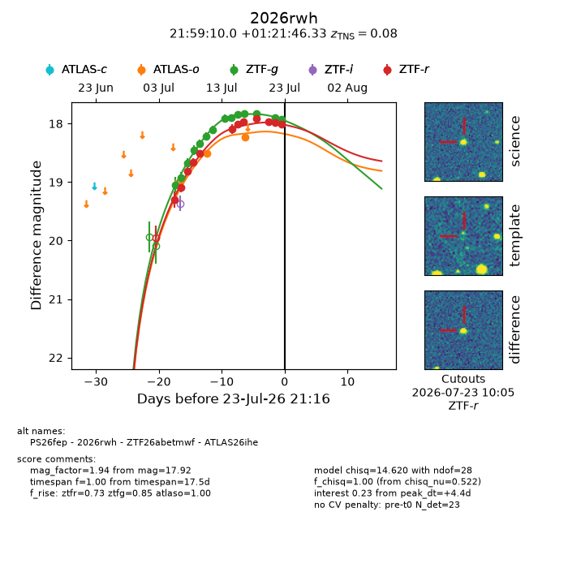
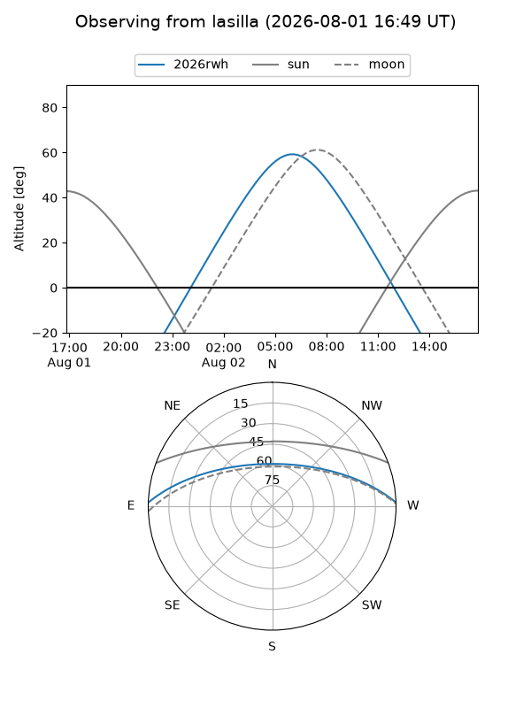
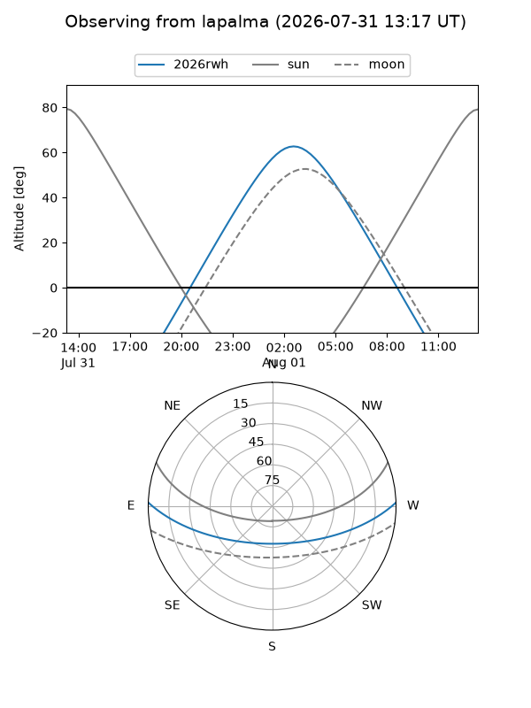
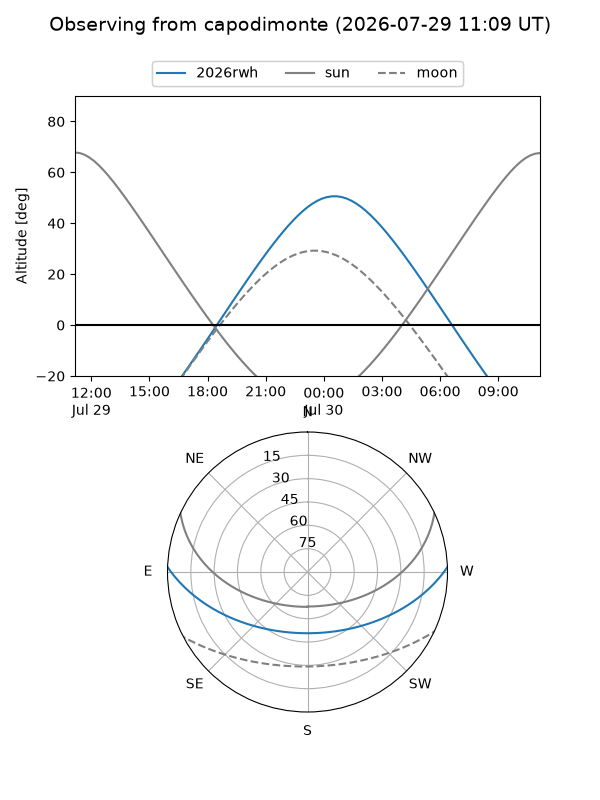
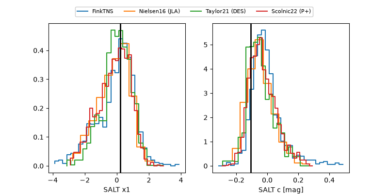

2026rwh
Target 2026rwh at 2026-07-23 21:19
Aliases and brokers:
FINK-ZTF: ztf.fink-portal.org/ZTF26abetmwf
Lasair-ZTF: lasair-ztf.lsst.ac.uk/objects/ZTF26abetmwf
ALeRCE-ZTF: alerce.online/object/ZTF26abetmwf
YSE-PZ: ziggy.ucolick.org/yse/transient_detail/2026rwh
TNS name: wis-tns.org/object/2026rwh
Direct TNS query: direct search
alt names
ZTF26abetmwf (ztf,fink_ztf)
2026rwh (tns,yse)
ATLAS26ihe (atlas)
PS26fep (panstarrs)
Coordinates:
equatorial (ra, dec) = 329.7918,+1.36287
equatorial (HMS+DMS) = 21:59:10.04,+01:21:46.33
galactic (l, b) = (60.3537,-39.72844)
Flags:
TNS type: SN Ia
TNS redshift: 0.0800
peak dt: +4.4
Photometry:
last atlaso=18.23, ztfg=17.92, ztfr=18.01
2 atlaso, 14 ztfg, 12 ztfr detections
Lightcurve

Visibility



Additional plots
